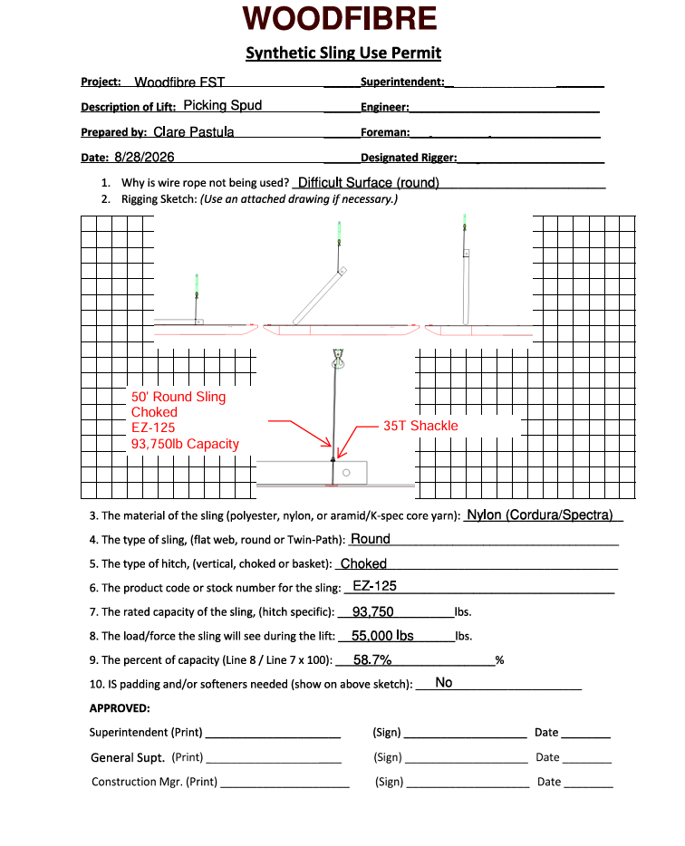

Woodfibre LNG Mooring Structure 01
Field Engineer Intern
Responsibilities
- Operations Planning + Documentation: hour-by-hour schedules, site permits, operations + lift plans.
- Field Testing + Documentation: conducted pile sounding tests, updated drilling logs and logged issues.
- Project Reporting: created and presented reports and project updates to project executives, stakeholders and client.
- Resource Management: tracked equipment and materials utilization, generated + reviewed LEMs (Labour, Equipment + Materials) for company and subcontractors.
- Cost Reporting: Invoice tracking, Accruals, Forecasting.
Project Challenges + Solutions
Site Logistics: procurement difficulties due to remote location.
> Proactively communicated with team to identify material procurement needs in advance and remained available to travel into town to source supplies in order to minimize construction delays.
- Steep Learning Curve: lack of field engineer training material and mentorship opprotunities.
> Created a Field Engineer Guide training material for new employees.
- Documentation Disorganization + Miscommunication: Unclear report responsibilities among multiple contributers and no record for materials received.
> Created packing slip tracker for all materials received and report section tracker identifying uncompleted sections + assigned member.
- Adaptability: Balanced responsibilities across Operations and Project Controls teams while adapting to a camp rotation schedule.
> Used planner to track tasks and sent end-of-shift emails outlining completed work and priorities for the next shift.
Internship Portfolio
Operations Planning

Lift Plan created for Pile Loft Operation
Project Controls

Daily Report Tracker created to assign responibilities and track completion progress
Communication